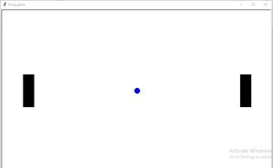
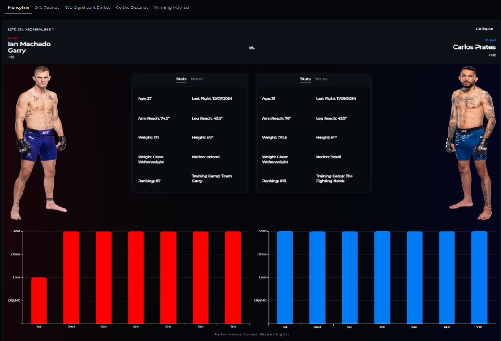

Check Out My Best Projects
TIC TAC TOE USING NIRYO NED 2
Challenge Statement
This project demonstrates an autonomous Tic-Tac-Toe game played by a Niryo NED-2 robotic arm using ROS2 Humble and RViz2. The robot is modeled with URDF/Xacro and controlled through JointState publishing without using MoveIt or Gazebo. It performs a structured action sequence including moving to home, simulating pick and place, operating the gripper, and returning home. The user plays as X, while the robot plays as O using a simple AI that selects valid moves. Full win and draw detection is implemented for rows, columns, and diagonals. Robot motion is smoothly animated using joint interpolation. TF broadcasting and robot_state_publisher are used for real-time visualization. The project combines robotics control with game logic to create an interactive simulation. It demonstrates core ROS2 concepts through a fun and engaging application. This project is ideal for academic use, robotics demos, and portfolio showcasing.
Ping Pong Game
Role: Python Game Developer
Description: Developed a real-time Ping Pong game using Python and Pygame, focusing on object-oriented design, real-time rendering, and interactive gameplay mechanics. Improved collision detection, implemented scoring and game-over logic, added replay functionality, and enhanced the experience with sound effects while iteratively refining the project through critical code review and AI-assisted development.
Fight Prediction
Role: Machine Learning Engineer(Co-Worked)
Description: Built and evaluated machine learning models to predict UFC fight outcomes using fighter statistics and historical performance data. Implemented and compared multiple classifiers including Logistic Regression, Decision Tree, Random Forest, Gradient Boosting, and MLP, using TimeSeriesSplit cross-validation for realistic evaluation. Performed feature scaling, analyzed influential fight metrics, and deployed the best-performing model to generate Red vs Blue corner win predictions.
Project Title
Role: Designer
Description: Website for a restaurant and redesigned the online menu.
Project Title
Role: Designer
Description: Website for a restaurant and redesigned the online menu.